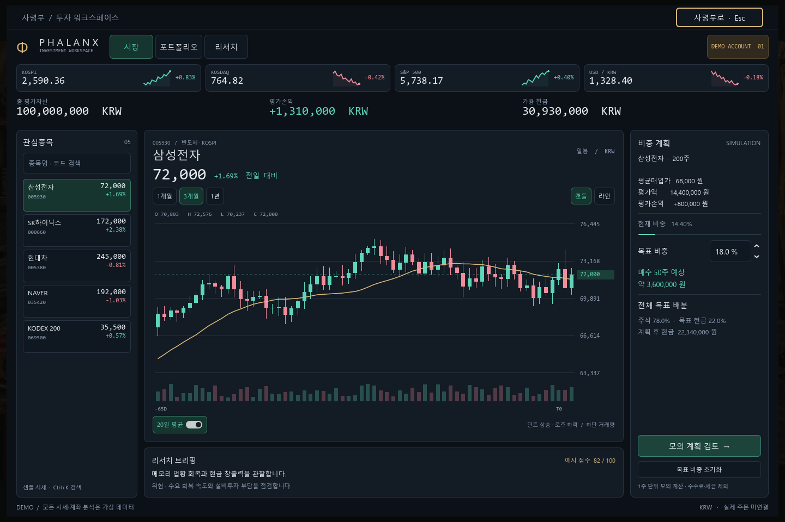

PHALANX / INVESTMENT WORKSPACE
MTS의 명료함. 터미널의 정보 밀도.
기존 Godot 프로젝트에서 실행되는 시장·포트폴리오·리서치 화면입니다. 검색, 차트, 비중 계획, 종목별 메모를 하나의 선택 상태로 연결했습니다.

시장 · 실제 GPU 렌더 · 1440 × 960확인한 범위
세 해상도 GPU 캡처, 새 화면 43개 GPU 검사, 기존 왕복 157/162개 검사 통과. 1280×720에서는 컴퓨터 사용 도구로 검색·차트·비중·노트·팝업·사령부 복귀를 직접 조작했습니다. 이 갤러리는 실행 화면 캡처이며 웹 터미널 자체는 아닙니다. 리서치 노트는 현재 앱 실행 중에만 유지됩니다.